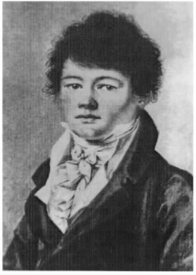
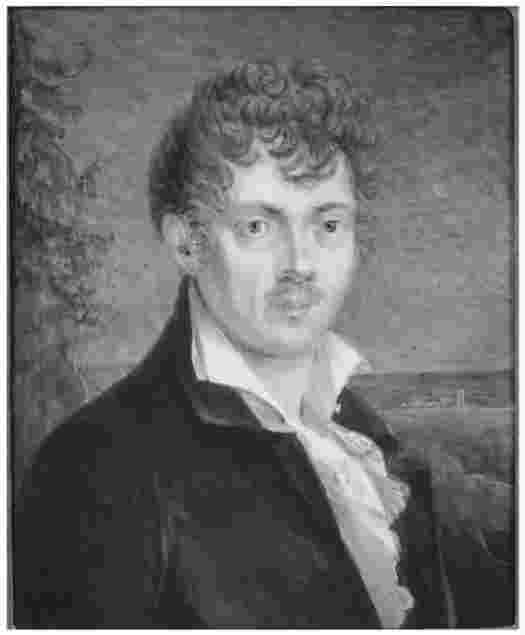
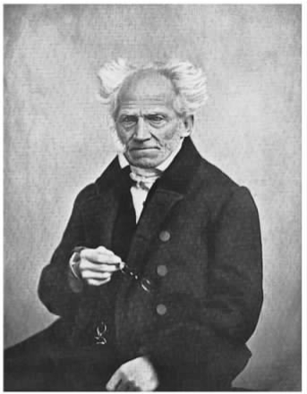

阿图尔·叔本华1788年生于但泽，1860年卒于美因河畔的法兰克福。他在生命的最后十年曾留下几张照片，从中我们可以获取对他最直接的感觉。他看上去脱俗不羁、坚忍不拔，但是炯炯有神的目光背后却藏着机警锐利的头脑和几许顽皮——这与从其作品中浮现出来的那个人格角色不无契合之处。叔本华直到生命晚年才开始享受某种程度的名誉，然而其哲学思想却并非老年或中年阶段的产物。虽然他发表的大部分著作完成于四十五岁定居法兰克福之后，但早在1810至1818年间他就构建了后来令他享誉世界的整个哲学体系。诚如尼采后来所言，我们应当记住，正是一个二十多岁的人以充满创造力和反叛精神的能量创作了《作为意志和表象的世界》。成熟阶段的叔本华专注于强化和补充他在这部杰作中所阐述的立场，但该著作却一直被知识界所忽视，直到他临近生命终点。
精神上的独立是叔本华最具个性的特征。他著述时无所畏惧，藐视权威，对他眼中德国学术圈徒有其表、因循守旧的传统深恶痛绝。但是在这背后还有一个重要的事实，即他在经济上的独立性。在步入成年的1809年，他继承了一笔遗产；若假以精明的管理，这笔钱足以让他衣食无忧地度过余生。叔本华出生时，其父海因里希·弗洛里斯·叔本华已是但泽富甲一方的大商贾。父亲四海为家，信奉启蒙运动的自由主义价值观与共和主义。当但泽被普鲁士并吞后，他离开该市，迁移到自由城市汉堡。阿图尔与父亲有一共同点，即都热爱法英两国文化，对普鲁士民族主义怀有恐惧。为儿子起“阿图尔”这个名字是因为好几种欧洲语言中均有此名——虽然其用意主要是希望孩子将来从事设想中的泛欧贸易事业。后来，叔本华觉得他还继承了父亲情感丰富、容易沉迷的个性。父亲死于1805年，很可能是自杀，这对叔本华是一个沉重打击。
叔本华在学校接受了广博而丰富的教育，而且富庶家庭所提供的旅行经历和社交机会进一步提升了叔本华的素养。在九岁那年，即他妹妹出生的同一年，他就被送到法国念书，从而学会了一口流利的法语。经过数年的学校教育，他在十五岁的时候随父母踏上了为期两年的欧洲之旅，所到国家包括荷兰、英格兰、法国、瑞士和奥地利。他游览了当时的许多著名景点，也不时被亲眼目睹的贫穷和和苦难深深触动。可是，在父母游历英国期间，他被委托给温布尔登的一家寄宿学校，该校狭隘的、惩戒性的、恪守宗教信条的观念（与此前他所接受的教育形成鲜明对照）给他留下了持久的消极印象。这段经历对叔本华的性格和教养产生了重要的影响。他是一个血气方刚、争强好胜的学生，不肯屈服于周围的种种愚民行径，他也因反抗而似乎陷于相当的孤立。父母给他写信，在信中父亲对他的笔迹吹毛求疵，母亲则滔滔不绝地谈他们过得如何快乐，恳求他采取更理智的态度，但两人都不大愿意从他的角度看待问题。我们很容易把这种情形看做他后来生活的缩影。随着生活的推移，有一点变得越来越明朗：他的生活不会建立在与他人的亲密关系之上。他开始把同伴比做一团火，“谨慎的人取暖时需保持一定的距离”（《叔本华手稿》第一卷，123），即便与他人共处也决心选择孤独，以免丧失自己的完整性。他后来撰文说，六分之五的人类只配受到轻蔑，但他同样也发觉人与人的交往有内心深处的障碍：“上天用多余的造化赋予我的内心怀疑、敏感、激情和骄傲，从而使它陷于孤立。”（《叔本华手稿》第四卷，506）他有抑郁的倾向，承认“我总是心怀焦虑，强迫自己去发现和寻找并不存在的危险”（《叔本华手稿》第四卷，507）。
一些描述叔本华性格的作者考察了他与父母之间的关系，他们的发现并不令人惊讶。父亲是一个焦虑不安、凡事苛求、令人生畏的人，望子成龙心切。约翰娜·叔本华（娘家姓特罗西纳）同样来自但泽一个成功的商人家庭，个性却大相径庭。她是一个活泼、爱交际的人，怀有文学梦想，最终成为了一个浪漫派小说家，使她在有生之年比儿子更出名。她在儿子的生活中是一个重要的力量，但他们之间的关系从未充满温情。在婚姻方面也是如此，正如她自己所写的那样，她觉得没有必要对丈夫“假装有炽热的爱情”，还声称丈夫也并不期待这种爱。海因里希·叔本华去世后，思想独立的约翰娜得以自由地追求文学事业。她迁居到魏玛，在那里成立了一个艺术和学术沙龙，常常引来当时许多社会名流的光顾。阿图尔与这个圈子中的一些人建立了联系，并从中受益。这些人当中尤其引人注目的有歌德和研究东方世界的学者弗里德里希·马耶尔，后者激发了叔本华对印度思想的毕生兴趣。然而，他与母亲的关系却有如疾风暴雨，乃至于1814年母亲将他永远逐出家门，不再见他。
此事发生之时，叔本华已经放弃了父亲为他规划的经商事业，并已踏上学术之路。1809年他去哥廷根大学求学，两年后又迁到柏林。他上过各类不同的理科课程，最初曾想学医，但很快就被哲学强烈地吸引。哥廷根大学哲学家G.E.舒尔茨建议叔本华从阅读柏拉图和康德的著作开始，对其研究生涯起到了决定性的作用。虽然无论用何种标准衡量，叔本华已是博览群书、颇有学养的思想家，但仍可以公正地说，这两位哲学家的著作在他头脑中激发了从此以后塑造其哲学思想的根本观念。他从弗里德里希·马耶尔那里了解的印度教典籍《奥义书》是构成其哲学思想的第三个来源，后来他把这方面内容与柏拉图和康德元素加以混合，奠定了《作为意志和表象的世界》的原创性。
迁到柏林后，叔本华听过施莱艾尔马赫和费希特的讲座。虽然这两人都是当时哲学界的重量级人物，但是按一贯做派，自视甚高的叔本华对他们有点不屑一顾，当然不会为了吸纳他们的思想才去听讲座。他的听课笔记和写在所读书页边的旁注（保存于《叔本华手稿》一书）表明他急欲反驳和争辩，而且，尽管还是个年轻学生，他的反应却表现出一种对自己的立场近乎不可思议的确信不疑。这也是一种后来基本不变的行为模式。叔本华学习时不注重与他人的合作，不愿与人交流思想，将自己置于审视之下。他在学习和写作时依赖自己的判断，将别人的观点当做原材料，用以加工成自己想要的模样。有时他把无法加以利用的东西贬损为垃圾，但他以一种嘲讽且诙谐的方式通常成功地使读者站到他的一边。如果没有这种坚定不移的决心，叔本华的成就将会大打折扣，但是这个优点却被一个缺点所抵消：对哲学家而言，多与人交流，多一些对话和自我批评意识，这是一个长处，而叔本华有时的表现却与此相反。
1813年，当叔本华准备撰写他的博士论文时，战争爆发了。叔本华厌恶打仗，更厌恶站在普鲁士一边与法国人打仗。他往南逃到魏玛附近的鲁多尔施塔特市，在那里完成了他的第一部著作《论充足理由律的四重根》。该书为他赢得耶拿大学的博士学位，并于同年以五百册的发行量出版。该书研究的是一个陈旧的学术话题，即充足理由律（据此原理，一切存在的事物必有其存在的根据或理由）。书中简要回顾了哲学史上人们对此原理的研究方式，然后对各类不同理由给出四重解释。全书的系统构架来源于康德，叔本华显然吸收了康德的思想，尽管是不无批判的吸收。书中有一些出人意料的重要发现，足以开启新的哲学思路，并强烈预示其代表作将要表达的思想。叔本华始终认为《四重根》是理解其哲学思想的必读书，并在1847年对它进行修订，以便再版。
另一部早期发表的著作是1816年的《论视觉和颜色》。这本小书是他与歌德交往的结果，后者的反牛顿式的颜色理论发表于1810年代初期。在讨论这一理论的过程中，叔本华和歌德逐渐彼此熟悉。叔本华并未把它纳入自己的首要计划，但可以理解的是，他没有拒绝与有生之年可能遇到的最伟大的人物之一进行合作。比他年长四十岁的歌德赏识叔本华严谨的头脑，认为他拥有巨大的潜力，但歌德更关心的是在自己的学术追求上获得帮助，而不是培养叔本华的才能。他们之间的短暂合作是叔本华事业中的唯一一次例外——但其骨子里却没有成为某人弟子的打算。他自己的著作《论视觉和颜色》与歌德的思想有所偏离，他也毫不掩饰地认为该书更胜一筹。歌德淡漠的回应虽不至于令叔本华崩溃，却也让他感到失望，两人的合作关系随之冷却下来。后来他给歌德寄了一本《作为意志和表象的世界》，并于1819年与歌德有过一次热情的会面，但此时两人已经分道扬镳。如歌德后来所言，他们就像两个握手分别的人，一个朝南走，一个朝北走。
叔本华的真正目标在《作为意志和表象的世界》第一卷中得以揭示。该卷完成于德累斯顿，发表于1818年，尽管扉页上注明的是1819年。叔本华在1813年的《四重根》一书中所进行的不带个人情感的康德式演练并未揭示其哲学的驱动力。该书没有回答有关痛苦和救赎、伦理和艺术、性、死亡以及生活的意义等问题，但这些领域已被纳入他关注的范围。搜集而成的《叔本华手稿》显示，他的最伟大著作经历了将近十年的创作过程。他对柏拉图和康德两人的思想加以改造，确信在普通意识与更高或“更好”的意识之间存在分裂，在后一种状态下，人的头脑能够穿透表象，领悟某种更真实的存在。这一思想蕴涵了美学和宗教的意义：叔本华在书中谈到，艺术家和“圣徒”都具备这种“更好的意识”——虽然我们应该立刻声明：他的哲学体系是彻头彻尾的无神论。他还敲响了悲观主义的基调之一，称我们在其中奋斗、渴求和受苦的普通经验下的生活，正是我们需要从中解放出来的状态。这些思想到1813年已在叔本华的头脑中得以充分确立。
使这部里程碑式作品得以成形的思想是有关意志的概念。在这部才华横溢的著作中，如其标题所示，叔本华提出世界具有两面性，一个是表象（Vorstellung）的或事物在经验中向我们呈现的那个世界，另一个是意志（Wille）的世界。据他论述，后者才是世界的本原 ，它处于局限着人类知识的种种表象之外。给意志下定义并非易事。先不妨说说它不是什么，这来得更容易一些。它既不是任何形式的思想或意识，也不将事物导向任何理性的目的（否则“意志”将成为上帝的代名词）。叔本华眼中的世界是漫无目的的。他的意志概念或许可以用如下观点给予最佳解释：朝着 某个目标奋斗 ，人们只要记住意志在根本上是“盲目”的，且它存在于自然界毫无意识的各种力量之中。最重要的是，人类心理可以被视为分裂的：它不仅包括理解和理性思维的能力，在更深的层次上还包括一种本质上“盲目”的奋斗过程，该过程支配着我们本性中的有意识部分，但也可能与其发生冲突。人类在两种生活之间维持着平衡：一种是作为生物体在本能驱使下生存和繁殖的生活；另一种则是纯粹智性的生活，它反抗人的本能，渴望对“更高的”现实作超越时间的思考。虽然叔本华的确仍预想有一种听天由命的“救赎”，但他认为普通生存状态必然包含痛苦与厌倦的双重悲苦，坚信这是由人类乃至于整个世界的本质决定的，且本应如此。

图2青年时期的叔本华，1802年
许多人无法将叔本华哲学作为一个单一的、连贯的形而上体系加以接受。但从叙事的角度，以及在该体系有关世界与自我的各个不同概念之间的动态互动方面，它的确具有强大的说服力和连贯性。与其把早期的著述视为所有后续著作的基础，不如把它当做一个早先的观点，它在新观点的比照下显得不够完善，并似乎受到新观点的削弱，但是后来却以改头换面的形式重新得到了确认。在这里有一种与同时代人黑格尔的方法表面上的相似，虽然一切与黑格尔有关的东西都令叔本华感到极度厌恶，而且在其他方面两人的写作也是大相径庭。托马斯·曼曾把叔本华的著作比做一首包含四个乐章的交响曲——以类似的心态来阅读此书不无帮助，可以在大量的“变奏”当中寻找基调上的反差和主题上的统一。当然，在文学构思和节奏的把握上很少有哲学家能够与叔本华媲美，也鲜有文风如此雄辩者。
尽管如此，这部伟大的著作在出版后的多年间几乎无人问津。叔本华感到苦闷，但他不是那种认为世人皆对唯他错的人；他毕生都坚信该书具有至高的价值。1820年，在以哲学教授黑格尔为首的教员面前试讲之后，他被授予了在柏林大学执教的权利。叔本华正式登上讲台，讲座的题目是令人惊愕的“哲学通论，即关于世界和人类思维之本质的理论”。可是他选择的授课时间与黑格尔重叠。有二百人出席了那位处于事业巅峰的教授的讲座，留给默默无闻的叔本华的听众则寥寥无几。后来几年虽然他的名字仍出现在讲座日程表上，但他再也不愿重蹈覆辙，就这样终结了自己的执教生涯。黑格尔所代表的是叔本华在哲学上厌恶的一切。他是一个职业型学者，善于利用叔本华所鄙视的体制权威。他维护教会和国家，而作为无神论者和个人主义者的叔本华对此是无暇顾及的。尽管叔本华本人是彻头彻尾的保守派，但他仅把政治国家视为保护财产和遏制过度利己主义的一个方便的手段；他无法接受黑格尔视国家为“人类存在之全部目的”的表述（《附录与补遗》第一卷，147）。黑格尔还是一个令人瞠目的文体家，其写作似乎成了抽象概念的堆砌，从中感觉不到由常识经验提供的新鲜空气；叔本华——不仅因为这一点——发现他的作品浮夸自大，宣扬蒙昧主义，甚至不够诚实。叔本华说，挂在黑格尔式的大学哲学头顶的标记应该是“一只乌贼，它在自己周围制造出一团晦涩的乌云，以便无人能看清它是什么，并附上铭文，‘我因自身晦涩而强大’”（《论自然界中的意志》，24）。若说叔本华的哲学建立在反对黑格尔之上是不确切的——他在创作其代表作时黑格尔离他的思想很远——但黑格尔获胜般的功成名就，加上他本人长期得不到认可的境遇，却在他心中产生了一种积怨，支配了叔本华随后的大部分哲学生涯。
19世纪20年代是叔本华著述最贫乏的时期。他曾到意大利旅行过，但在返回途中以及旅行结束后均遭受严重疾病和抑郁的折磨；他还与柏林国家剧院的合唱团女歌手卡罗琳·里希特维持着一段暧昧关系。他曾酝酿若干写作计划，如翻译休谟的宗教著作和斯特恩的《特里斯特拉姆·项狄传》，但无一落实。他的笔记本里有时写满了对黑格尔哲学的猛烈抨击，后经修改收入其后期的著作，但在柏林期间他并没有发表新的作品。特别令人遗憾的是，他为翻译出版康德的《纯粹理性批判》及其他著作而联系的英国出版商居然拒绝了他的提议。叔本华的英语很好，他有一流的文体感，而且对康德的作品了如指掌。假如他在这个相对较早的时候就成功地把康德推介给英语国家的更多读者，这对人类思想史将会产生怎样的影响，只能留待人们推测了。（与此对照，他的学术成就之一即是对《批判》第一版的重新发现，对此我们应该感激他，该书于1838年得以重版要部分归功于他的努力。）
1831年霍乱波及柏林，显然是它夺走了包括黑格尔在内的许多人的性命，叔本华也离开了这座城市。经过一段时间的犹豫不决后，他在法兰克福安顿下来，在此继续过着一种表面上平淡无奇的生活。写作之余，他以各种消遣来作为调剂——看戏、听歌剧、散步、吹长笛、外出就餐以及在镇图书馆读《泰晤士报》。现在的他更多产了。1836年他发表了《论自然界中的意志》，此文旨在通过举出从独立来源获取的具有确证性的科学证据，来支持他关于意志的学说。这至今仍是一篇有趣的论著，虽然我们有理由认为，若无《作为意志和表象的世界》作支撑，该论著本身并非上乘佳作。不过，在1838和1839这两年，叔本华报名参加了由挪威皇家科学协会和丹麦皇家科学协会所举办的两次论文竞赛，这两次机缘催生了两篇相互对应又独立成篇的优秀论文：《论意志的自由》和《论道德的基础》，1841年它们被合并为《伦理学的两个基本问题》一书出版。就基本信条而言，这些文章并未彻底背离叔本华的早期著作，但二者构思严谨、富有说服力，在宏大设计下各个局部的论述均清晰了然。把它们推荐给今天的伦理学专业学生也很合适。在论自由一文中，叔本华令人信服地陈述了决定论的缘由，但他认为决定论几乎无法解决有关自由和责任的深层问题，这与稍晚近的一些哲学家看法一致。这篇论文被挪威皇家科协授予金质奖章。
第二篇论文的一部分是对康德伦理学的彻底批判，它在丹麦遭遇了不同的命运：尽管是唯一参赛的论文，皇家科协却拒绝给它授奖。他们判定该论文未能成功地回答竞赛命题——并且他们对文中谈及时下几位优秀哲学家时的“不恰当”方式颇为不满。他们指的是谁呢？叔本华在后来的出版前言中反问道：费希特和黑格尔！难道这些人是不容轻慢的“哲圣”吗？的确，叔本华一直就没有遵循传统的学术礼貌规则，但是现在他要抓住这个机会，用一切可能的手段慷慨激昂地表达自己的观点。他对黑格尔哲学发出了一系列越来越严厉的谴责，称其空洞而混乱，并引用荷马关于客迈拉这个多种野兽混合体的生动描述作比喻。他在结尾处写道：

图3叔本华：卡尔·路德维希·卡兹创作的微型肖像，1809年
1844年，《作为意志和表象的世界》的第二卷与该书的新版第一卷同时出版。叔本华的明智之处在于他没有试图去改写年轻时代的作品。相反，他对原作进行了充分而详尽的阐发，在深思熟虑的基础上对其加以廓清和延展。第二卷实际上比第一卷更长，二者结合恰好构成一个整体。1859年，即他去世的前一年，它们以第三版的形式再次一并发行。叔本华最后出版的新著是1851年问世的另一部双卷本《附录与补遗》。这个堂皇的希腊语书名的意思是“增补的作品和省略的材料”，内容涵盖了从扩展了的哲学论文到较为通俗的、常常分散发表的“人生智慧格言”。有点奇怪的是，正是这部首先在英国获得好评的晚期著作使得叔本华名扬天下。对其作品的再版需求也随即而来，他甚至成了德国大学课程里的专题内容。造访者和信件纷至沓来，其中包括热情的崇拜者理查德·瓦格纳寄来的歌剧《尼伯龙根的指环》的完整剧本。附带说明一下，叔本华对此人的音乐评价并不是很高。在去世后的头五十年里，叔本华将成为欧洲最具影响力的作家之一。尽管他从未标榜自己为诗人，但出现在《附录与补遗》（第二卷，658）结尾处的诗行无疑忠实地反映了他在人生末年的感受：

图4叔本华：约翰·舍费尔拍摄的照片，1859年4月